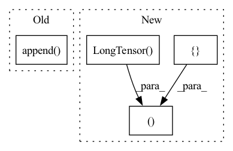

Pattern ID :13423
Before Change
neg_num = tot_item_num - used_num
neg_end = new_inter_num + pos_num + neg_num
pos_len_list.append(pos_num)
user_idx_list.append( slice(new_inter_num, neg_end))
new_inter_num += pos_num + neg_num
users = pd.DataFrame({uid_field: users})
users = self._dataframe_to_interaction(self.join(users))After Change
start_idx = 0
pos_len_list = []
neg_len_list = []
user_len_list = []
pos_idx = []
used_idx = []
users = list(uid2items[uid_field])
for i, row in enumerate(uid2items.itertuples()):
uid = users[i]
pos_item_id = getattr(row, iid_field)
pos_idx.extend([_ + start_idx for _ in pos_item_id])
pos_num = len(pos_item_id)
used_item_id = self.sampler.used_item_id[self.phase][uid]
used_idx.extend([_ + start_idx for _ in used_item_id])
used_num = len(used_item_id)
neg_num = tot_item_num - used_num
neg_len_list.append(neg_num)
pos_len_list.append(pos_num)
user_len_list.append(pos_num + neg_num)
start_idx += tot_item_num
user_df = pd.DataFrame({uid_field: users})
user_tensor = self._dataframe_to_interaction(self.join(user_df))
return user_tensor, torch.LongTensor(pos_idx), torch.LongTensor(used_idx),\
pos_len_list, user_len_list, neg_len_list
def __next__(self):
if self.pr >= self.pr_end:
self.pr = 0In pattern: SUPERPATTERN
Frequency: 3
Non-data size: 4
Instances Fragment ID: 45188225
Project Name: rucaibox/recbole
Commit Name: efaf2d8c84961b5042c0d42e08e56a59f064f267
Time: 2020-08-05
Author: houyupeng@ruc.edu.cn
File Name: data/dataloader.py
M Class Name: GeneralFullDataLoader
N Class Name: GeneralFullDataLoader
M Method Name: _neg_sampling(2)
N Method Name: _neg_sampling(2)
M Parent Class: GeneralGroupedDataLoader
N Parent Class: GeneralGroupedDataLoader
M File Name: data/dataloader.py
N File Name: data/dataloader.py
M Start Line: 336
M End Line: 370
N Start Line: 341
N End Line: 377
Before Change
all_x.append(x), all_y.append(y), all_gts.append(gts)
else:
for x, y in loader:
all_x.append( x) , all_y.append(y)
x, y, gts = torch.cat(all_x), torch.cat(all_y), torch.cat(all_gts) if len(all_gts) > 0 else None
for c in sorted(set(y.tolist())):
out.append(x[y == c][:percls])After Change
loader, _ = self.loaders(10, num_workers=0, shuffle_train=True)
else:
_, loader = self.loaders(10, num_workers=0, shuffle_test=True)
x, y, gts, out = torch.FloatTensor(), torch.LongTensor(), torch.FloatTensor(), []
if isinstance(self.train_set, GTMapADDataset):
for xb, yb, gtsb in loader:
x, y, gts = torch.cat([x, xb]), torch.cat([y, yb]), torch.cat([gts, gtsb])
if all([x[y == c].size(0) >= percls for c in [0, 1]]): Fragment ID: 45188227
Project Name: liznerski/fcdd
Commit Name: 2913c560d12c5bfeb825b3437d7416c8f7b8e924
Time: 2020-10-23
Author: p_liznersk13@cs.uni-kl.de
File Name: python/fcdd/datasets/bases.py
M Class Name: TorchvisionDataset
N Class Name: TorchvisionDataset
M Method Name: preview(3)
N Method Name: preview(3)
M Parent Class: BaseADDataset
N Parent Class: BaseADDataset
M File Name: python/fcdd/datasets/bases.py
N File Name: python/fcdd/datasets/bases.py
M Start Line: 91
M End Line: 101
N Start Line: 91
N End Line: 104
Before Change
ground_state = list(self.rhf.mo_occ)
configs = []
configs.append( ground_state)
nocc = int(np.ceil(self.active_space[0]/2))
nvirt = int(self.active_space[0]/2)
After Change
def select_configuration_singlet(self):
confs_spin_up = []
confs_spin_down = []
c0 = np.argwhere(self.rhf.mo_occ!=0).flatten()
index_homo = np.max(c0)
confs_spin_up.append(c0)
confs_spin_down.append(c0)
nocc = int(np.ceil(self.active_space[0]/2))
nvirt = int(self.active_space[0]/2)
for iocc in range(nocc):
for ivirt in range(1,nvirt+1):
cup = list(np.copy(c0))
cup.pop(index_homo-iocc)
cup.append(index_homo+ivirt)
confs_spin_up.append(np.array(cup))
confs_spin_down.append(np.array(c0))
return torch.LongTensor(confs_spin_up), torch.LongTensor(confs_spin_down)
def nuclear_potential(self,pos):
Fragment ID: 45188221
Project Name: nlesc-jcer/qmctorch
Commit Name: 3d0729884ee51e648a4ed7c8ff4f07e1a7a28bf4
Time: 2019-05-17
Author: nicolas.gm.renaud@gmail.com
File Name: pyCHAMP/wavefunction/neural_pyscf_wf_base.py
M Class Name: NEURAL_PYSCF_WF
N Class Name: NEURAL_PYSCF_WF
M Method Name: select_configuration_singlet(1)
N Method Name: select_configuration_singlet(1)
M Parent Class: nn.Module
N Parent Class: nn.Module
M File Name: pyCHAMP/wavefunction/neural_pyscf_wf_base.py
N File Name: pyCHAMP/wavefunction/neural_pyscf_wf_base.py
M Start Line: 122
M End Line: 136
N Start Line: 129
N End Line: 153